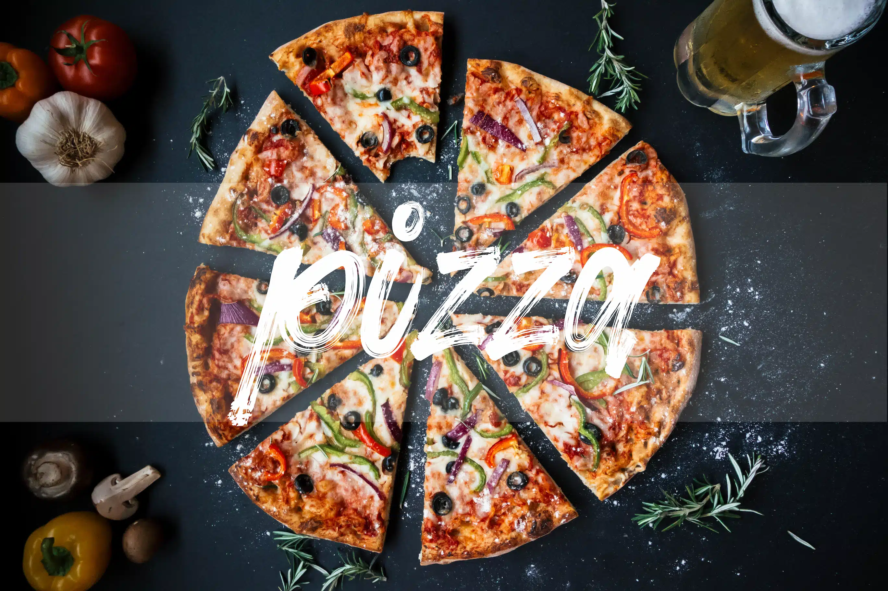
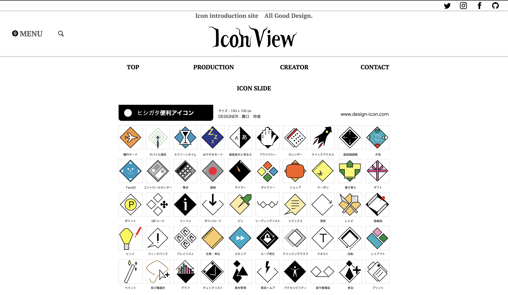

Code / コード作品 VillNeDouble https://aminesam1092.github.io/VILLNEDOUBLE コードの中身をGithubに上げております。 Pasta https://aminesam1092.github.io/Pasta コードの中身をGithubに上げております。 Pizza  コードの中身をGithubに上げております。 IconView  コードの中身をGithubに上げております。